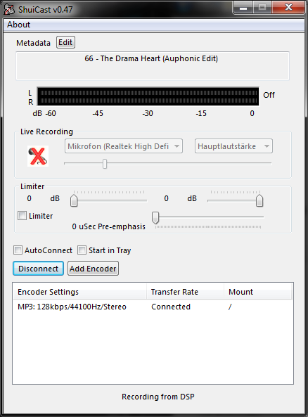

| Configuration | Previous | Top | Next |
|---|
Lets first take a look at the main ShuiCast screen:

The Metadata box is used to display the current metadata that is being sent to each of the configured broadcast servers. This metadata is taken by default from the media player and can be overridden by clicking the "Edit" button by the Metadata label.
When the Edit button is clicked, the following window appears:

This window has 2 sections, one for entering the metadata manually, and that can be used for more automated tasks. To enter the metadata manually, simply enter the metadata in the supplied box and click "OK". This will cause the current metadata to be what you just entered. Additionally, you may "Lock" the metadata, which will prevent any other updates (via the media player or via the external Metadata) to override what you entered. This is, in general, used to set the metadata in a more permanent fashion.
In addition to entering the metadata manually, you can configure ShuiCast to get metadata from external sources. Currently, only file and URL are supported. A interval is specified and every interval, ShuiCast will either access the File or URL and use that data as it's metadata. If using a File, then ShuiCast will read the first line of the file and use that as the metadata, and if using a URL, it will similarly read the first line in the response from the URL call.
The live recording section of the main ShuiCast window is used to enable and
disable live recording within ShuiCast. To enable live recording, simply click on
the microphone icon  .
Additionally, you can configure which device will be
used as the recording device by selecting it from the dropdown in the live
recording section of the ShuiCast config. Right below this dropdown is a slider
control which controls the recording level for that recording device. Each
recording device has a separate volume control.
.
Additionally, you can configure which device will be
used as the recording device by selecting it from the dropdown in the live
recording section of the ShuiCast config. Right below this dropdown is a slider
control which controls the recording level for that recording device. Each
recording device has a separate volume control.
This section is the meat of the configuration of ShuiCast. This is where you add encoders for each of your desired streams. Each encoder can be configured independently and each of them have their own set of configuration parameters. For the sake of this documentation, we will walk through configuring a single encoder, and adding additional encoders should be iterations of the first.
You will see 2 buttons and a check box in this section of the ShuiCast main window. The "Connect" button is used to connect all defined encoders. Additionally individual encoders can be specificially connected by right clicking on them. The AutoConnect checkbox can be used to automatically connect all the defined encoders on ShuiCast startup. When this checkbox is checked, ShuiCast will automatically initiate a "Connect" action on each of the encoders 5 seconds after ShuiCast startup.
Also, new encoders can be added by clicking the "Add encoder" button. To configure a new or existing encoder, simply double click on it and the configuration screen will appear. There are 3 sections to the configuration screen.

The following describes each of the settings:

The following describes each of the settings:
The following describes each of the settings: